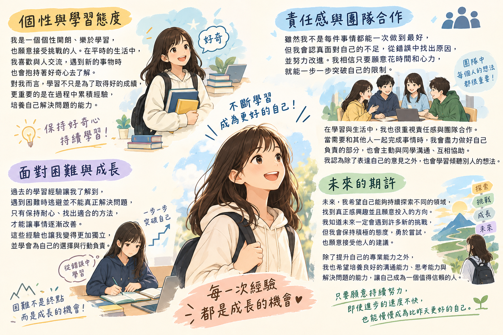

大家好，我是一個個性開朗、樂於學習，也願意接受挑戰的人。在平時的生活中，我喜歡與人交流，遇到新的事物時也會抱持著好奇心去了解。對我而言，學習不只是為了取得好的成績，更重要的是在過程中累積經驗，培養自己解決問題的能力。雖然我不是每件事情都能一次做到最好，但我會認真面對自己的不足，從錯誤中找出原因，並努力改進。我相信只要願意花時間和心力，就能一步一步突破自己的限制。
在學習與生活中，我也很重視責任感與團隊合作。當需要和其他人一起完成事情時，我會盡力做好自己負責的部分，也會主動與同學溝通、互相協助。我認為團隊中每個人的想法都很重要，因此除了表達自己的意見之外，我也會學習傾聽別人的想法。過去的學習經驗讓我了解到，遇到困難時逃避並不能真正解決問題，只有保持耐心、找出適合的方法，才能讓事情逐漸改善。這些經驗也讓我變得更加獨立，並學會為自己的選擇與行動負責。
未來，我希望自己能夠持續探索不同的領域，找到真正感興趣並且願意投入的方向。我知道未來一定會遇到許多新的挑戰，但我會保持積極的態度，勇於嘗試，也願意接受他人的建議。除了提升自己的專業能力之外，我也希望培養良好的溝通能力、思考能力與解決問題的能力，讓自己成為一個值得信賴的人。我相信每一次經驗都是成長的機會，只要願意持續努力，即使進步的速度不快，也能慢慢成為比昨天更好的自己。
